<mat-toolbar>
    
    <div id="links">
        <button mat-button (click)="onClick">Action</button>
    </div>
    <button mat-icon-button class="example-icon" aria-label="Example icon-button with menu icon">
      <mat-icon>menu</mat-icon>
    </button>
    <span>My App</span>
    <span class="example-spacer"></span>
    <button mat-icon-button class="example-icon favorite-icon" aria-label="Example icon-button with heart icon">
      <mat-icon>favorite</mat-icon>
    </button>
    <button mat-icon-button class="example-icon" aria-label="Example icon-button with share icon">
      <mat-icon>share</mat-icon>
    </button>
  </mat-toolbar>
  